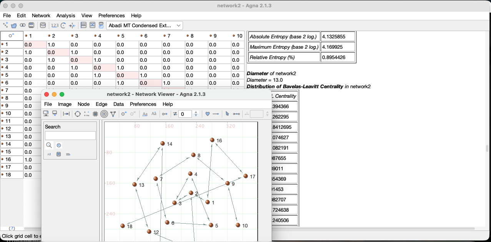

Free and open source on NetAnalysis.co.uk
AGNA
Applied Graph and Network Analysis Open Source is a desktop and CLI software for social network analysis, sociometry, and sequential analysis. It is designed for researchers, teachers, and students who want to create, visualize, and analyze networks without programming.
Current stable release: AGNA 2.1.3Build networks
Create and edit directed, undirected, binary, and valued networks through matrices, tables, and graphical views.
Explore structure
Inspect density, components, distances, centrality, sociometric patterns, and other network properties.
Visualize relations
Use an integrated visual editor to arrange, inspect, and export readable network diagrams.
Teach and learn
Work with small examples that make nodes, ties, matrices, and measures easier to understand.
Who is AGNA for?
AGNA is particularly suited to small and medium research networks: communication, collaboration, affiliation, interaction, behavioral, institutional, historical, and other relational data. It can be used in sociology, anthropology, communication research, psychology, education, organizational research, animal-behavior studies, and the humanities.
At a glance
| Component | Purpose | Primary audience | Licence |
|---|---|---|---|
| AGNA Desktop | Graphical network creation, visualization, and analysis | Researchers, students, teachers | Apache-2.0 |
| AGNA Core | Java library for network models, analysis, transformations, layouts, and formats | Developers and research-software projects | Apache-2.0 |
| AGNA CLI | Command-line analysis, reproducible workflows, and diagram generation | Advanced users, scripts, automation | Apache-2.0 |
Source, licensing, and reproducible workflows
AGNA Desktop, AGNA Core, and AGNA CLI are free and open-source software released under the Apache License, Version 2.0. The licence permits use, modification, distribution, and commercial use, subject to preservation of applicable copyright, licence, and notice material. It also includes an explicit patent licence. Read the full Apache License 2.0.
The projects share a common architecture: AGNA Desktop provides the graphical interface; AGNA Core provides the reusable engine; and AGNA CLI makes core functions available for command-line, scripted, and reproducible work.
AGNA Desktop ──────► AGNA Core ◄────── AGNA CLI (graphical UI) (engine) (command line)
Browse source code · Read the contribution guide · Report a bug or propose an improvement · Report security vulnerabilities privately
Build from source
git clone https://github.com/baeckett/AGNA.git cd AGNA mvn verify # requires JDK 17 and Maven
The repository builds with Maven against JDK 17; the full test suite (230 tests) runs with mvn verify.
Use AGNA Core
AGNA Core is available as a release JAR. Browse the AGNA Core module for source and build information. Generate API documentation locally with mvn javadoc:javadoc.
Installation
Download AGNA
The installers bundle the Java runtime, so Java is not necessary to be installed separately. The plain desktop jar requires Java 17 or newer.
Release date: 14 September 2026
Software licence: Apache License 2.0
| System | Download | Notes |
|---|---|---|
| Windows | Windows .msi installer · .exe installer | Both bundle the Java runtime. |
| macOS | macOS .dmg installer | Drag AGNA to Applications; the Java runtime is bundled. |
| Linux | Linux x64 archive · Debian/Ubuntu .deb installer | Both bundle the Java runtime. |
Install AGNA Desktop
Windows
- Download the Windows installer.
- Open it and follow the installation steps.
- Start AGNA from the Start menu.
macOS
- Download the macOS disk image or installer.
- Move AGNA to Applications, or complete the installer.
- Open AGNA from Applications or Launchpad.
Linux
- Download the Debian/Ubuntu .deb installer, the Fedora/RHEL .rpm package, or the portable archive.
- Install:
sudo apt install ./AGNA-2.1.3-amd64.deb(Debian/Ubuntu) orsudo dnf install ./agna-2.1.3-1.x86_64.rpm(Fedora/RHEL). For the archive, extract it to any folder. - Start AGNA from the application menu, or run
agnain a terminal (installed packages) or the archive's launcher.
System requirements
- Supported systems: AGNA runs on Windows, macOS, and Linux. The plain desktop JAR requires Java 17 or newer; the installers bundle a compatible Java runtime, so Java does not need to be installed separately by the user.
- Memory: 512 MB minimum; 2 GB recommended.
- Disk space: about 150–250 MB installed.
- Internet connection: not required for normal analysis after installation.
Advanced downloads
| Component | For whom? | Download / installation |
|---|---|---|
| AGNA CLI | Reproducible and automated workflows | Download CLI ZIP (JAR, reference, manual page, and shell completions) · Download CLI JAR · CLI guide |
| AGNA Core | Java developers and software projects | Download Core JAR · Download Core sources · Core source and API build information (from source: mvn javadoc:javadoc) |
| Source code | Contributors and developers | Browse source code |
All installers are 64-bit. The macOS dmg is built for Apple Silicon (arm64); Windows and Linux installers target x64/amd64, so a 32-bit Windows machine cannot install them.
For advanced verification, download the SHA-256 checksums and read the release notes.First steps
Quick Start
This short exercise introduces a small directed communication network. It is intended to help a new user open data, inspect a graph, calculate basic measures, and save results. See the full Quick Start guide.
1. Download the example data
Download the six-person communication example. The file should contain either an adjacency matrix or an edge list, depending on the version of AGNA you release.
2. Open the network
- Start AGNA Desktop.
- Select File → Open.
- Choose the example file.
- Confirm whether ties are directed, and whether values are binary or weighted.
3. Inspect the network
Open the graph view. Each node represents a person, and each arrow represents a directed communication tie. Drag a node to improve readability if necessary. Notice which people receive or send several ties and whether any are isolated.
4. Calculate basic measures
- Run the network description command to obtain the number of nodes, ties, density, and components.
- Run degree centrality to inspect who has the most incoming or outgoing relations.
- Run shortest-path or distance analysis to examine how easily actors can reach each other through the network.
5. Save and export
- Save the AGNA project under a new name.
- Export any table needed for later work.
- Export the graph image or vector graphic for a presentation or paper.
- Record the AGNA version and the analytical choices used.
Continue with the documentation for importing data, working with different tie types, interpreting measures, and exporting results.
Screenshots
Screenshot of AGNA 2.1.3 on macOS: the sociomatrix grid with an analysis report, and the Network Viewer.

Manual and learning resources
Documentation
AGNA documentation is organized around research tasks and reproducible workflows.
Getting started
- Quick Start guide
- Install AGNA
- Your first network
- Nodes, ties, graphs, and matrices
- Open, save, and export projects
Working with data
- Create a network by hand
- Import an adjacency matrix
- Import an edge list
- Directed, undirected, binary, and valued ties
- Missing data and absent ties
Analysis
- Size, density, and components
- Degree, closeness, and betweenness
- Geodesic distance and paths
- Sociometric analysis
- Sequential analysis
- Interpreting results responsibly
Visualization and exchange
Examples and teaching materials
Browse example networks and teaching exercises. Each example should include a small data file, a research question, expected output, and interpretive notes.
Need help?
See the support page, search the issue tracker, or report a reproducible problem using the information requested there. Please remove confidential network data before attaching example files to a public issue.
Research use
Cite AGNA
If you use AGNA in research, teaching, a thesis, or a publication, please cite the software version used.
Preferred software citation
Bența, M. I. (2026). AGNA: Applied Graph and Network Analysis Open Source (Version 2.1.3) [Computer software]. AGNA Open Source. https://doi.org/10.5281/zenodo.22708199
BibTeX
@software{benta_2026_agna,
author = {Bența, Marius I.},
title = {{AGNA}: Applied Graph and Network Analysis Open Source},
version = {2.1.3},
year = {2026},
publisher = {AGNA Open Source},
doi = {10.5281/zenodo.22708199},
url = {https://github.com/baeckett/AGNA}
}
View the BibTeX citation file · View the Citation File Format record
Historical paper
For historical background on AGNA 2.1, see Studying Communication Networks with AGNA 2.1. The current AGNA software citation uses the 2026 software DOI above.
Version history
Releases
Every release includes a version number, release notes, source tag, downloadable artifacts, and checksums. Record the version you use in research outputs.
AGNA 2.1.3 — Stable Open-Source Release
Released: 14 September 2026
- First public open-source release of AGNA Desktop, AGNA Core, and AGNA CLI.
- This release revives the original AGNA Desktop under the Apache License 2.0 and adds AGNA Core, the reusable Java engine, and AGNA CLI with more than 30 commands for headless, reproducible analysis and diagram generation. The codebase is modernized for Maven, JDK 17, FlatLaf, and UTF-8, and is covered by 230 tests. Import and export support includes GraphML, GML, GraphSON, Pajek, Excel, and text-based workflows.
Release notes and downloads · Source tag · SHA-256 checksums
Software bill of materials - SBOM diff
| First BOM (audit baseline) | Final BOM | |
|---|---|---|
| Format | CycloneDX 1.4 | CycloneDX 1.4 + SPDX 2.2 |
| Components | 9 | 14 (all Apache License 2.0) |
| Non-permissive licenses | LGPL (JExcelAPI/jxl 2.6.12) | none |
| Known-vulnerable EOL component | log4j 1.2.14 (transitive of jxl) | none (log4j-api 2.23.1) |
| Excel .xls stack | JExcelAPI (LGPL) | Apache POI 5.3.0 (commons family) |
The license gate in CI enforces the Apache-2.0-only policy; both BOMs are attached on the release page.
Known issues
No critical known issues are currently listed. See the release notes and issue tracker for current limitations.
Verify downloads
Advanced users can compare the SHA-256 checksum of a downloaded installer or archive with the values published for the release. This helps confirm that the file matches the released artifact.
# Example only — adapt to the user’s operating system sha256sum AGNA-2.1.3-Linux-x64.tar.gz
Project history
About AGNA
AGNA—Applied Graph and Network Analysis Open Source—was created by Marius I. Bența as a free application for social network analysis, sociometry, and sequential analysis.
From its beginning, AGNA was intended for researchers, teachers, and students who needed accessible graphical tools rather than a programming environment. Ease of use, direct visual interaction, and clarity of output were central priorities.
AGNA today
AGNA 2.1.3 is a stable open-source release. It preserves the Desktop application while separating the reusable computational engine as AGNA Core and providing AGNA CLI for reproducible command-line workflows.
The project’s long-term aim is reasonable and practical: to keep accessible network analysis available to researchers who work with relational data and to provide an open foundation for teaching, scholarship, and future development.
Acknowledgements
AGNA was created and is maintained by Marius I. Bența.
The author gratefully acknowledges the researchers, teachers, students, and early users whose feedback helped shape AGNA’s design, especially its emphasis on accessibility for non-programming social scientists and humanists.
The author also extends many thanks to Alina S. Rusu for testing and for her educational involvement in the AGNA project.
Third-party software, libraries, icons, fonts, and other materials are listed separately in THIRD_PARTY_NOTICES.md.
Contact
- General contact: contact@netanalysis.co.uk
- Source code and issue tracker: https://github.com/baeckett/AGNA
- Private security reports: contact@netanalysis.co.uk
Privacy and security
AGNA Desktop and AGNA CLI process network data locally on the user’s computer. They do not upload project files, node labels, edge information, or analysis results to AGNA servers.
Please do not include confidential research data in public issue reports. For ordinary questions, documentation corrections, feature suggestions, and reproducible bug reports, use the AGNA issue tracker. To report a potential security vulnerability privately, contact contact@netanalysis.co.uk before disclosing it publicly.